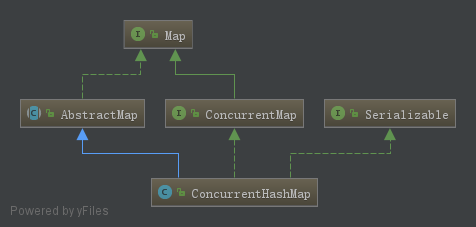
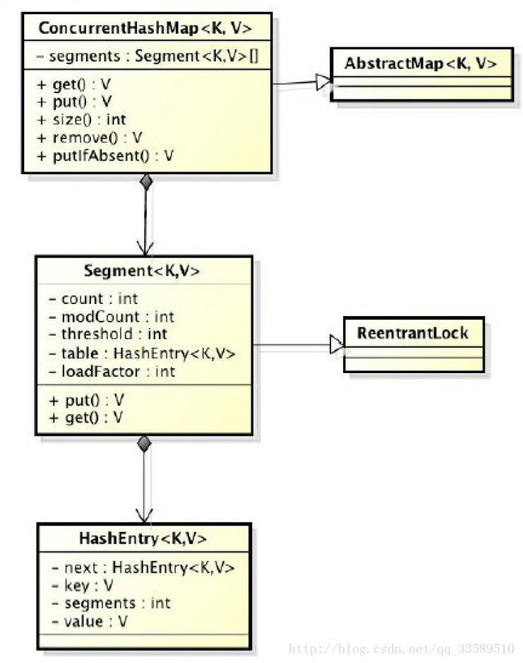
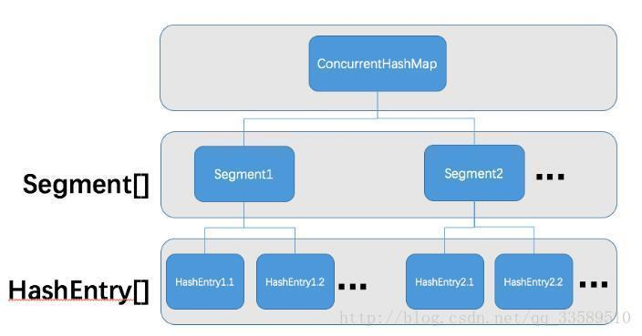

一、HashMap分析
在JDK1.8之前，hashMap由数组+链表组成，1.8之后，对hashMap进行了一些修改，最大的不同就是利用了红黑树，所以其由数组+链表+红黑树组成。查找时，根据hash值我们能够快速定位到数组的具体下标，但是之后的话，需要顺着链表一个个比较下去才能找到我们需要的，时间复杂度取决于链表的长度为O(n)，为了降低这部分的开销，在Java8中，当链表中的元素达到了8个时，会将链表转换为红黑树，在这些位置进行查找时可以降低时间复杂度为O(logn)。
1.put过程：（JDK1.8）
第一次put值时，会触发resize()，类似Java7的第一次put也是要初始化数组长度的。
第一次resize和后续的扩容有些不一样，因为这次是数组从null初始化到默认的16或自定义的初始容量，找到具体的数据下标，如果此位置没有值，那么直接初始化一下Node并放置在这个位置就可以了。如果数组改为只有数据：首先，判断该位置的第一个数据和我们要插入的数据，key是不是“相等”，如果是，取出这个节点，如果该节点是代表红黑树的节点，调用红黑树的插值方法，插入到链表的最后面（Java7是插入到链表的最前面），当treeify_threshold为8时，如果新插入的值是链表中的第8个，会触发下面的treeifyBin，也就是将链表转换为红黑树；如果在该链表中找到了“相等”的key（==或equals）；如果hashMap由于新插入这个值导致size已经超过了阈值，则需要进行扩容。
JDK1.7
当插入第一个元素时，需要先初始化数组大小；
1）求key的hash值（数组索引 index=hash&（size-1））；
2）找到对应的数组下标；
3）遍历一下对应下标处的链表，看是否有重复的key已经存在，如果有，直接覆盖，put方法返回旧值就结束了；
4）不存在重复的key，将此entry添加到链表中。
2.数组扩容（当前的size已经达到了阈值，并且要插入的数组位置上已经有元素，那么就会触发扩容，扩容后，数组大小为原来的2倍）（JDK1.8）
resize()方法用于初始化数组或数组扩容，每次扩容后，容量为原来的2倍，并进行数据迁移。
1）对数组进行扩容，将数组扩大一倍，将阈值扩大一倍；
2）第一次put时初始化数组；
3）开始遍历数组进行数据迁移；
如果该数组位置上只有单个元素：那就简单了，直接迁移这个元素就可以了。
如果是链表：需要将此链表拆成两个链表，放到新的数组中，并且保留原来的先后顺序，loHead，loTail对应一条链表，hiHead、hiTail对应另一条链表。
JDK 1.7
扩容就是一个新的大数组替换原来的小数组，并将原来数组中的值迁移到新的数组中。
由于是双倍扩容，迁移过程中，会将原来table[i] 中的链表的所有节点，分拆到新的数组的newTable[i] 和 newTable[i+oldLength]位置上。如原来数组长度为16，那么扩容后，原来table[0]出的链表中的所有元素会被分配到新数组中 newTable[0] 和 newTable[16] 这两个位置。
3.get过程（JDK1.8）
1）计算key的hash值，根据hash值找到对应的数组下标：hash&（length-1）
2）判断数组该位置处的元素是否刚好是我们要找的，如果不是，走第三步；
3）判断该元素类型是否是TreeNode，如果是，用红黑树的方法取数据，如果不是，走第四步；
4）遍历链表，直到找到相等（==或equals）的key。
JDK 1.7
1）根据key计算hash值；
2）找到对应的数组下标：hash&（length-1）
3）遍历该数组位置处的链表，直到找到相等的key。
4.为什么HashMap线程不安全？（hash冲突和扩容导致的）
hashMap的实现使用了一个数组，每个数组项里面由一个链表方式来实现，因为hashMap使用key的hashcode来寻找存储位置，不同的key可能具有相同的hashcode，这时就出现了哈希冲突，也叫哈希碰撞。为了解决哈希冲突，有开放地址法，以及链地址法。hashMap的实现选取了链地址法，也就是将哈希值一样的entry保存在同一个数组里面，可以把一个数组项当作一个桶，桶里面装的entry的key的hashcode是一样的。
扩容导致的不安全：
1）put时导致的多线程数据不一致。比如有两个线程A和B，首先A希望插入一个key-value对到hashMap中，首先计算记录所要落到的桶里面的链表头结点，此时线程A的时间片用完了，而此时线程B被调用得以执行，和线程A一样执行，只不过线程B成功将记录插到了桶里面，假设线程A插入的记录计算出来的桶所引和线程B要插入的记录计算出来的桶索引是一样的，那么当线程B成功插入后，线程A再次被调用运行时，它依然持有过期的链表头但是它对此一无所知，以至于它认为应该这样做，如此一来就覆盖了线程B插入的记录，这样线程B插入的记录就凭空消失了，造成了数据不一致的行为。
2）get：扩容时将数组扩为二倍后，原数组中的数组的索引会发生变化，在进行get时仍然用原来的索引进行寻找，导致找不到要寻找的值。
二、ConcurrentHashMap分析
ConcurrentHashMap是线程安全且高效的HashMap。
1.线程不安全的HashMap
hashMap是Java中最常用的一个map类，性能好，速度快，但是不能保证线程安全，它可用null作为key/value。
在多线程环境下，使用hashMap进行put操作会引起死循环，是因为多线程会导致hashMap的entry链表形成环，一旦成环，entry的next节点永远不为空，产生死循环。所以在并发情况下不能使用hashMap。
2.效率低下的HashTable
线程安全的Map类，其public方法均用synchronize修饰，这表示在多线程操作时，每个线程在操作之前都会锁住整个map，待操作完成后才释放。
如线程1使用put操作进行元素添加，线程2不但不能使用put方法进行添加元素，也不能使用get方法来获取元素，所以竞争越激烈效率越低，这必然导致多线程时性能不佳。另外，hashTable不能使用null作为key/value。
3. 锁分段技术可有效提升并发访问效率
hashTable在竞争激烈的并发环境中表现出效率低下的原因是所访问hashTable的线程都必须竞争同一把锁，假如容器中有多把锁，每一把锁用于锁容器其中一部分的数据，那么当多线程访问容器里不同数据段的数据时，线程间就不会存在锁竞争，从而可以有效提高并发访问效率，这就是ConcurrentHashMap所使用的锁分段技术。
- 首先将数据分成一段一段地存储；
- 然后给每个数据段配一把锁；
- 当一个线程占用锁访问其中一个段数据时，其他段的数据也能被其他线程访问。


ConcurrentHashMap是由Segment数组和HashEntry数组组成。
Segment是一种可重入锁，在ConsurrentHashMap里扮演锁的角色；HashEntry则用于存储键值对数据。
一个ConsurrentHashMap里包含一个Segment数组，Segment的机构和HashMap类似，是一种数组和链表结构。一个Segment里包含一个HashEntry数组，每个HashEntry是一个链表结构的元素，每个Segment守护着一个HashEntry数组里的元素，当对HashEntry数组的数据进行修改时，必须首先获得与它对应的Segment锁。如图：

4.ConcurrentHashMap的初始化
1）ConcurrentHashMap类中包含三个与Segment相关的成员变量：
final int segmentMask;
final int segmentShift;
final Segment<K,V>[] segments;
其中segments是Segment的原生数组，此数组的长度可以在ConcurrentHashMap的构造函数中使用并发度参数指定，其默认值为default_concurrency_level=16；segmentShift是用来计算segments数组索引的位移量，而segmentMask则是用来计算索引的掩码值。
例如并发度为16时（即segments数组长度为16），segmentShift为32-4=28（因为2的4次幂为16），而segmentMask则为1111（二进制），索引的计算式如下：
int j=(hash>>>segmentShift) & segmentMask;
2）在多线程并发访问一个共享变量时，为了保证逻辑的正确，可以采用以下方法：
加锁，性能最低，能保证原子性、可见性，防止指令重排；
volatile修饰，性能中等，能保证原子性，防止指令重排；
使用getObjectVolatile，性能最好，可防止指令重排；
因此ConcurrentHashMap选择了使用Unsafe的getObjectVolatile来读取segments中的元素。
1 private Segment<K,V> segmentForHash(int h) {
2 long u = (((h >>> segmentShift) & segmentMask) << SSHIFT) + SBASE;
3 return (Segment<K,V>) UNSAFE.getObjectVolatile(segments, u);
4 }
3）Segment锁
Segment继承了ReentrantLock（可重入锁），因此它实际上是一把锁。在进行put、remove、replace、clear等需要改动内容的操作时，都要进行加锁操作，其代码一般是这样的：
1 final V put(K key, int hash, V value, boolean onlyIfAbsent) {
2 HashEntry<K,V> node = tryLock() ? : scanAndLockForPut(key, hash, value);
3 V oldValue;
4 try {
5 //实际代码……
6 }
7 } finally {
8 unlock();
9 }
10 return oldValue;
11 }首先调用tryLock，如果加锁失败，则进入scanAndLockForPut(key,hash,value)，该方法实际上是先自旋等待其他线程解锁，直至指定的次数MAX_SCAN_RETRIES；若自旋过程中，其他线程释放了锁，导致本线程直接获得了锁，就避免了本线程进入等待锁的场景，提高了效率。若自旋一定次数后，仍未获取锁，则调用lock方法进入等待锁的场景。
优点：采用这种自旋锁和独占锁结合的方法，在很多场景下能够提高Segment并发操作数据的效率。
初始化方法是通过initialCapacity、loadFactor和concurrencyLevel等参数来初始化segment数组，段偏移量segmentShift、段掩码segmentMask和每个segment里的HashEntry数组来实现的。
4）初始化segments数组
1 if (concurrencyLevel > MAX_SEGMENTS)
2 concurrencyLevel = MAX_SEGMENTS;
3 int sshift = 0;
4 int ssize = 1;
5 while (ssize < concurrencyLevel) {
6 ++sshift;
7 ssize <<= 1;
8 }
9 segmentShift = 32 - sshift;
10 segmentMask = ssize - 1;
11 this.segments = Segment.newArray(ssize);
segments数组的长度ssize是通过concurrencyLevel计算得出的；为了能通过按位与的散列算法来定位segments数组的索引，必须保证segments数组的长度为2的N次方，所以必须计算出一个大于或等于concurrencyLevel的最小的2的N次方值来作为segments数组的长度。concurrencyLevel的最大值为65535，这意味着segments数组的长度最大为65536，对应的二进制是16位。
5）初始化segmentShift和segmentMask
这两个全局变量需要在定位segment时的散列算法里使用；sshift等于ssize从1向左移位的次数，默认concurrencyLevel等于16，1需要向左位移动4次，所以sshift为4.
segmentShift用于定位参与散列算法的位数，segmentShift等于32减sshift，所以等于28。这里之所以是32，是因为ConcurrentHashMap里的hash()方法输出的最大位数为32位。
segmentMask是散列运算的掩码，等于ssize减1，即15；掩码的二进制各个位的值都是1，因为ssize的最大长度为65536，所以segmentShift最大值是16，segmentMask最大值是65535，对应的二进制为16位，每个位都是1。
6）初始化每个segment
输入参数initialCapacity是ConcurrentHashMap的初始化容量，loadfactor是每个segment的负载因子，在构造方法里需要通过这两个参数来初始化数组中的每个segment。
1 if (initialCapacity > MAXIMUM_CAPACITY)
2 initialCapacity = MAXIMUM_CAPACITY;
3 int c = initialCapacity / ssize;
4 if (c * ssize < initialCapacity)
5 ++c;
6 int cap = 1;
7 while (cap < c)
8 cap <<= 1;
9 for (int i = 0; i < this.segments.length; ++i)
10 this.segments[i] = new Segment<K, V>(cap, loadFactor);上面代码中的变量cap就是segment里HashEntry数组的长度，它等于initialCapacity除以ssize的倍数c，如果c大于1，就会取大于等于c的2的N次方值，所以cap不是1，就是2的N次方。
segment的容量threshold=(int) cap*loadFactor，默认initialCapacity等于16，loadfactor等于0.75，通过运算cap等于1，threshold等于零。
7）定位Segment
既然ConcurrentHashMap使用分段锁Segment来保护不同段的数据，那么在插入和获取元素时，必须先通过散列算法定位到Segment。可以看到ConcurrentHashMap会首先使用hash的变种算法对元素的hashcode进行一次再散列。
1 private static int hash(int h) {
2 h += (h << 15) ^ 0xffffcd7d;
3 h ^= (h >>> 10);
4 h += (h << 3);
5 h ^= (h >>> 6);
6 h += (h << 2) + (h << 14);
7 return h ^ (h >>> 16);
8 }进行再散列，是为了减少散列冲突，使元素能够均匀地分布在不同的Segment上，从而提高容器的存取效率。
假如散列的质量差到极点，那么所有元素都在一个Segment中，不仅存区元素缓慢，分段锁也会失去意义。
1 //ConcurrentHashMap通过以下散列算法定位segment
2 final Segment<K,V> segmentFor(int hash) {
3 return segments[(hash >>> segmentShift) & segmentMask];
4 }
5 //默认情况下segmentShift为28,segmentMask为15,再散列后的数最大是32位二进制数据,向右无符号移动28位,即让高4位参与到散列运算中,(hash>>>segmentShift)&segmentMask的运算结果分别是4、15、7和8,可以看到散列值没有发生冲突.
8）HashEntry
1 static final class HashEntry<K,V> {
2 final int hash;
3 final K key;
4 volatile V value;
5 volatile HashEntry<K,V> next;
6
7 HashEntry(int hash, K key, V value, HashEntry<K,V> next) {
8 this.hash = hash;
9 this.key = key;
10 this.value = value;
11 this.next = next;
12 }
13 final void setNext(HashEntry<K,V> n) {
14 UNSAFE.putOrderedObject(this, nextOffset, n);
15 }
16
17 static final long nextOffset;
18 static {
19 try {
20 UNSAFE = sun.misc.Unsafe.getUnsafe();
21 Class k = HashEntry.class;
22 nextOffset = UNSAFE.objectFieldOffset
23 (k.getDeclaredField("next"));
24 } catch (Exception e) {
25 throw new Error(e);
26 }
27 }
28 }
29 @SuppressWarnings("unchecked")
30 static final <K,V> HashEntry<K,V> entryAt(HashEntry<K,V>[] tab, int i) {
31 return (tab == ) ? :
32 (HashEntry<K,V>) UNSAFE.getObjectVolatile
33 (tab, ((long)i << TSHIFT) + TBASE);
34 }
35 static final <K,V> void setEntryAt(HashEntry<K,V>[] tab, int i, HashEntry<K,V> e) {
36 UNSAFE.putOrderedObject(tab, ((long)i << TSHIFT) + TBASE, e);
37 }与Segment类似，HashEntry使用UNSAFE.putOrderedObject来设置它的next成员变量，这样既可以提高性能，又能保持并发可见性。同时entryAt方法和setEntryAt方法也使用了UNSAFE.getObjectVolatile和UNSAFE.putOrderedObject来获取和写入指定索引的HashEntry。
总之，Segment数组和HashEntry数组的读取写入一般都是使用UNSAFE。
5.ConcurrentHashMap的操作
5.1 get操作
先经过一次再散列，然后使用这个散列值通过散列运算定位到Segment，再通过散列算法定位到元素。
1 public V get(Object key) {
2 Segment<K,V> s;
3 HashEntry<K,V>[] tab;
4 int h = hash(key);
5 //找到segment的地址 long u = (((h >>> segmentShift) & segmentMask) << SSHIFT) + SBASE;
6 //取出segment，并找到其hashtable if ((s = (Segment<K,V>)UNSAFE.getObjectVolatile(segments, u)) != null &&
7 (tab = s.table) != ) {
8 //遍历此链表，直到找到对应的值 for (HashEntry<K,V> e = (HashEntry<K,V>) UNSAFE.getObjectVolatile
9 (tab, ((long)(((tab.length - 1) & h)) << TSHIFT) + TBASE); e != ; e = e.next) {
10 K k;
11 if ((k = e.key) == key || (e.hash == h && key.equals(k)))
12 return e.value;
13 }
14 }
15 return ;
16 }整个get方法不需要加锁，只需要计算两次hash值，然后遍历一个单向链表（此链表长度平均小于2），因此get性能很高。高效之处在于整个过程不需要加锁，除非读到的值是空才会加锁重读。
HashTable容器的get方法是需要加锁的，那ConcurrentHashMap的get操作是如何做到不加锁的呢？
原因是它的get方法将要使用的共享变量都定义成了volatile类型，如用于统计当前Segment大小的count字段和用于存储值得HashEntry的value。
定义成volatile的变量，能够在线程之间保持可见性，能够被多线程同时读，并且保证不会读到过期的值，但是只能被单线程写（有一种情况可以被多线程写，就是写入的值不依赖于原值），在get操作里只需要读不需要写共享变量count和value，所以可以不用加锁。
之所以不会读到过期的值，是因为根据Java内存模型的happen before原则，对volatile字段的写操作先于读操作，即使两个线程同时修改和获取volatile变量，get操作也能拿到最新的值，这是用volatile替换锁的经典应用场景。
transient volatile int count;
volatile V value;
在定位元素的代码里可以实现，定位HashEntry和定位Segment的散列算法虽然一样，都与数组的长度减去1再相“与”，但是相“与”的值不一样。
定位Segment使用的是元素的hashcode再散列后得到的值的高位，定位HashEntry直接使用再散列后的值。其目的是避免两次散列后的值一样，虽然元素在Segment里散列开了，但是却没有在HashEntry中散列开。
hash>>>segmentShift & segmentMask; //定位Segment所使用的hash算法
int index=hash & (tab.length-1); //定位HashEntry所使用的hash算法
5.2 put操作
由于需要对共享变量进行写操作，所以为了线程安全，在操作共享变量时必须加锁。put方法首先定位到Segment，然后在Segment里进行插入操作。
插入操作需要经历的两个步骤：
判断是否需要对Segment里的HashEntry数组进行扩容；定位添加元素的位置，然后将其放在HashEntry数组里；
1）是否需要扩容？
在插入元素前会先判断Segment里的HashEntry数组是否超过容量，如果超过阈值，则对数组进行扩容。Segment的扩容判断比HashMap更恰当，因为HashMap是在插入元素后判断是否已经到达容量，如果到达了就进行扩容，但是很有可能扩容之后没有新元素插入，这时HashMap就进行了一次无效的扩容。
2）如何扩容？
在扩容时，首先会创建一个容量是原来两倍的数组，然后将原数组里的元素进行再散列后插入到新的数组里。为了高效，ConcurrentHashMap不会对整个容器进行扩容，而只对某个Segment扩容。
put方法的第一步：计算segment数组的索引，并找到该segment，然后调用该segment的put方法。
1 public V put(K key, V value) {
2 Segment<K,V> s;
3 if (value == )
4 throw new NullPointerException();
5 int hash = hash(key);
6 //计算segment数组的索引，并找到该segment int j = (hash >>> segmentShift) & segmentMask;
7 if ((s = (Segment<K,V>)UNSAFE.getObject // nonvolatile; recheck
8 (segments, (j << SSHIFT) + SBASE)) == ) // in ensureSegment
9 s = ensureSegment(j);
10 //调用该segment的put方法 return s.put(key, hash, value, false);
11 }put方法的第二步：在Segment的put方法中进行操作。
1 final V put(K key, int hash, V value, boolean onlyIfAbsent) {
2 //调用tryLock()尝试加锁，若失败则调用scanAndLockForPut进行加锁，同时寻找key相应的节点node
3 HashEntry<K,V> node = tryLock() ? :
4 scanAndLockForPut(key, hash, value);
5 //以下的代码都运行在加锁状态
6 V oldValue;
7 try {
8 HashEntry<K,V>[] tab = table;
9 //计算hash表的索引值，并取出HashEntry int index = (tab.length - 1) & hash;
10 HashEntry<K,V> first = entryAt(tab, index);
11 //遍历此链表 for (HashEntry<K,V> e = first;;) {
12 //如果链表不为空，在链表中寻找对应的node，找到后进行赋值，并退出循环 if (e != null) {
13 K k;
14 if ((k = e.key) == key ||
15 (e.hash == hash && key.equals(k))) {
16 oldValue = e.value;
17 if (!onlyIfAbsent) {
18 e.value = value;
19 ++modCount;
20 }
21 break;
22 }
23 e = e.next;
24 }
25 //如果在链表中没有找到对应的node else {
26 //如果scanAndLockForPut方法中已经返回的对应的node，则将其插入first之前 if (node != null)
27 node.setNext(first);
28 else //否则，new一个新的HashEntry
29 node = new HashEntry<K,V>(hash, key, value, first);
30 int c = count + 1;
31 //测试是否需要自动扩容 if (c > threshold && tab.length < MAXIMUM_CAPACITY)
32 rehash(node);
33 else //设置node到Hash表的index索引处
34 setEntryAt(tab, index, node);
35 ++modCount;
36 count = c;
37 oldValue = ;
38 break;
39 }
40 }
41 } finally {
42 unlock();
43 }
44 return oldValue;
45 }5.3 size操作
要统计整个ConcurrentHashMap里的元素的数量，就必须统计所有Segment里元素的数量后计总。
Segment里的全局变量count是一个volatile，在并发场景下，是不是直接把所有的Segment的count相加就可以得到整个ConcurrentHashMap大小了呢？不是的。
虽然相加时可以获取每个Segment的count的最新值，但是可能累加前使用的count发生了变化，那么统计结果就不准了。所以，最安全的做法就是在统计size时把所有Segment的put、remove和clear方法全部锁住，但是这种做法显然非常低效。
因为在累加count操作过程中，之前累加过的count发生变化的机率非常小，所以ConcurrentHashMap的做法是先尝试2次通过不锁Segment的方式来统计各个Segment大小，如果统计的过程中，count发生了变化，则再采用加锁的方式来统计所有Segment的大小。
那么ConcurrentHashMap又是如何判断在统计时容器是否发生了变化呢？
使用modCount变量，在put、remove和clear方法里操作元素前都会将变量modCount进行加1，那么在统计size前后比较modCount是否发生变化，从而得知容器的大小是否发生了变化。